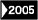

|  |

|
戦争・思想 |
||
| 「心」と戦争 | |||
| 高橋哲哉 | |||
|
四六判 232頁 |
|||
| 定価1470円（本体1400円） | |||
| ISBN4-7949- 6568-0 C0036 | |||
| この国では「戦争ができる国づくり」への動きが強まっている。しかし、いくら法律を完備しても戦争はできない。それをになう国民の「心」が求められている。教育基本法「改正」、道徳副教材『心のノート』の全小中学生への配布、有事法制など、平和憲法離れが加速するこの時代の根底にあるものを思想的に分析し、どのように生きるかを問う注目の書。 |
|
|
|
|

|
ノンフィクション・メディア |
||
| 世界はもっと豊かだし、人はもっと優しい | |||
| 森達也 | |||
| 四六判 288頁 | |||
| 定価1785円 (本体1700円) | |||
| ISBN4-7949- 6567-2 C0036 | |||
|
日本はオウムで、世界は９・11でむき出しになった。メディアの現場は「右へならえ」的な思考停止状態に陥り、憎悪をかきたてられた市民は他者への想像力を衰退させる。世界レベルで広がるこの思考停止の輪に対抗するため、いま私たちにできることは何か？気鋭のドキュメンタリー作家による、21世紀への希望を込めたノンフィクション・エッセイ。 |
|
|
|
|
|
|
エッセイ・伝記 |
||
| 二列目の人生 隠れた異才たち | |||
| 池内紀 | |||
|
四六判 232頁 |
|||
| 定価2310円（本体2200円） | |||
| ISBN4-7949- 6566-4 C0095 | |||
| もう一人の南方熊楠といわれた植物学者大上宇市。市井人の文筆家モラエス…。名声や地位より、とことん我が道を行くことを選んだ、一流を超えた「一流人」の生き方はどんなものだったか。ドイツ文学者で名エッセイストの著者が、一番にならないことを選んだ16人の天才の素顔に迫る。現代を颯爽と生きぬくヒント満載の伝記エッセイ。 |
|
|
|
|
|
|
登山・ノンフィクション | ||
| テンジン エベレスト登頂とシェルパ英雄伝 |
|||
| ジュディ＆タシ・テンジン 丸田浩・広川弓子 訳 | |||
|
四六判 352頁 |
|||
| 定価2100円（本体2000円） | |||
| ISBN４ー7949ー 6570-2 C0025 | |||
| 50年前の1953年5月29日、エベレストはイギリス隊によって初登頂された。このとき隊員ヒラリーとともに山頂に立った一人のシェルパがいる。その名をテンジンという。世界最高峰登頂にかけたさまざまな人間たちの夢と挫折を描きつつ、「雪山のタイガー」といわれた男の鮮烈な生涯をたどる最高の山岳ノンフィクション。 |
|
|
|
|
|
ミステリ |
||
| 晶文社ミステリ ロジャー・シェリンガムとヴェインの謎 |
|||
| アントニイ・バークリー 武藤崇恵訳 | |||
| 四六判 320頁 | |||
| 定価2100円（本体2000円） | |||
| ISBN４ー7949ー2736-3 C0397 | |||
| ラドマス村で起きた転落死事件の調査を依頼されたシェリンガムは早速現地へ赴いた。当初は事故死と見られていた事件だが、断崖の下で発見された死体が握っていたボタンから俄然殺人事件の疑いが浮上、シェリンガムは僅かな手がかりをもとに見事な推理を披露してモーズビー警部を唸らせるが…。探偵小説への痛烈な諷刺精神にみちたユーモア探偵小説。 |
|
|
|
|
|
外国文学 |
||
| 晶文社アフロディーテ双書 ガミアニ |
|||
| アルフレッド・ミュッセ 須賀慣 訳 | |||
| 四六判 170頁 | |||
| 定価1200円（本体1260円） | |||
| ISBN４ー7949ー2311-2 C0397 | |||
| いま書店で入手できないエロチックな外国文学の佳品をコレクションとして刊行。全編に書き下ろし解説を付す。本書は第一回。詩人ミュッセの１８３０年作品。ジョルジュ・サンドをモデルとした謎の女、ガミアニ夫人。ある青年が、夫人と若い娘の同性愛を覗き見る。やがて三人による狂宴となる。快楽のきわみおいて自殺する夫人の物語。鹿島茂氏解説。 |
|
|
|
|
外国文学 |
||
| 晶文社アフロディーテ双書 女と人形 |
|||
| ピエール・ルイス 生田耕作 訳 | |||
| 四六判 224頁 | |||
| 定価1300円（本体1365円） | |||
| ISBN４ー7949ー2312-0 C0397 | |||
| フランスの詩人・作家、ピエール・ルイス（1870−1925年）。本書は、その小説の代表作である。恋と情熱の国スペイン・セビリヤを舞台に、悪魔のような美女と、彼女への狂おしい恋の虜となった中年男とが繰りひろげる、パッションと性愛の悲喜劇。生田耕作の名訳による傑作。アフロディーテ双書・第2回。 |
|
|
|
|
晶文社出版の本 TEL.03-5688-6881 |
|
|
学校案内 | ||
| 大学院受験案内 2004年度用 | |||
| 晶文社出版編集部 | |||
| Ａ５判・896頁 | |||
| 定価2940円(本体2800円) | |||
| ISBN4-7949-9656-Ｘ C0037 | |||
| 大学院の情報はこの１冊で！ 全国の大学院・研究科の情報を１冊にまとめて紹介。'03年度に新設された大学院、通信制大学院も含め、研究科ごとに問い合わせ先、専攻内容、選考方法、受験料、学費などの詳細情報を掲載。「人間科学研究科のある大学院は？」巻頭の研究科別一覧で探せます。'03年度の応募状況、ホームページアドレスも収録。 |
| 学校案内 | |||
| 社会人のための大学案内 2004年度用 |
|||
| 晶文社出版編集部 | |||
| Ａ５判・340頁 | |||
| 定価1995円(本体1900円) | |||
| ISBN4-7949-9488-5 C0037 | |||
| 今からでも大学へ、もう一度大学へ！ 社会人入試、社会人編入学を実施している大学を中心に、通信教育部、夜間課程、医学部の編入学、科目等履修生制度、公開講座など、社会人に開かれている全国502大学の最新情報を紹介。仕事を持つ人も、主婦も、定年後の人生に踏み出す人も、学ぶことに関心のあるすべての人のための新しい利用法ガイド。 |
| 学校案内 | |||
| 社会人のための大学院案内 2004年度用 |
|||
| 晶文社出版編集部 | |||
| Ａ５判・512頁 | |||
| 定価2940円(本体2800円) | |||
| ISBN4-7949-9463-Ｘ C0037 | |||
| 専門的職業人の養成、生涯学習の推進などの目的を掲げ、社会人を積極的に受け入れる大学院が増えている。社会人入試を行う大学院、夜間大学院、昼夜開講制の大学院、独立研究科のほか、'通信制の大学院など、社会人に開かれている全国の大学院・研究科の最新情報を満載。志望分野で探せる研究科別の一覧、'03年度の応募状況一覧付き。 |
| 色彩検定 | |||
| 「色彩検定 3 級 わかる！ 一問一答 新装版」 | |||
| 高野 洋 | |||
| Ａ５判・206頁 | |||
| 定価1890円(本体1800円) | |||
| ISBN4-7949-7494-9 C0070 | |||
| AFT主催「文部科学省認定ファッションコーディネート色彩能力検定」3 級試験の問題集＆参考書。1 頁に問題と答えがあり、いつでも、どこでも勉強できる。解答欄は、わかりやすい言葉と著者のオリジナルカラーイラストを使い丁寧に解説。巻末のカラーチップを切り取り、貼って勉強できる。AFT 発行のテキストを網羅しており、色彩の入門書としても活用できる。 |